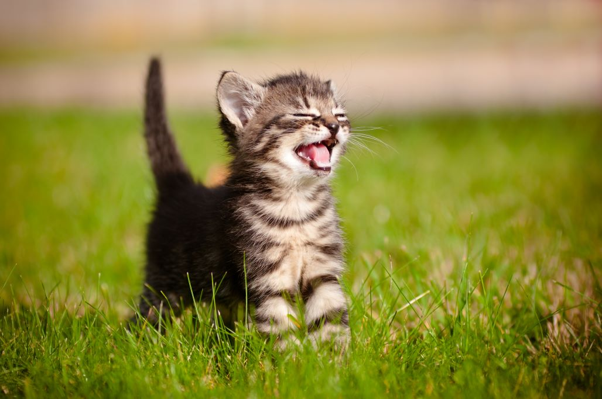
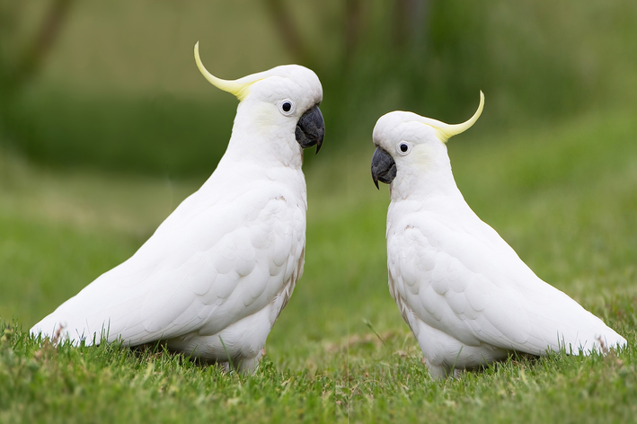
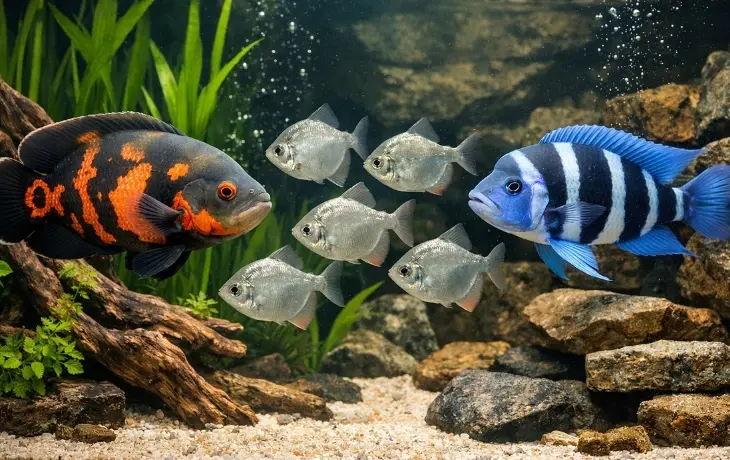
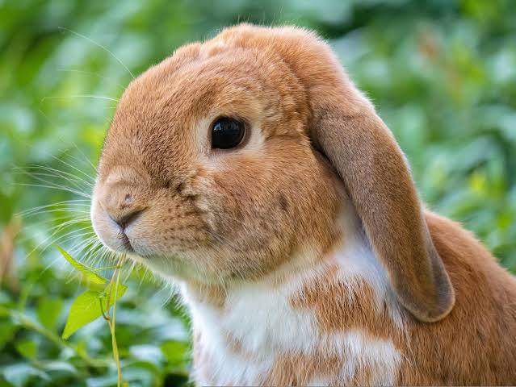

Cachorros

Cachorros precisam de alimentação adequada, água fresca, passeios, brincadeiras, higiene, vacinação e acompanhamento veterinário. Também é importante oferecer um ambiente seguro e atenção diariamente.
Cuidados básicos
- Alimentação adequada
- Água fresca disponível
- Passeios e atividades físicas
- Brincadeiras e estímulos
- Higiene e escovação
- Vacinação e prevenção de parasitas
- Acompanhamento veterinário
Custo médio
R$ 250 a R$ 1.200+ por mês
Gatos

Gatos precisam de alimentação adequada, água limpa, caixa de areia higienizada e um ambiente seguro. Arranhadores, brinquedos e locais para subir ajudam no bem-estar do animal.
Cuidados básicos
- Ração adequada para a idade
- Água fresca disponível
- Caixa de areia limpa
- Ambiente seguro e telado
- Brinquedos e arranhadores
- Vacinação e cuidados preventivos
- Acompanhamento veterinário
Custo médio
R$ 180 a R$ 450 por mês
Pássaros

Pássaros precisam de alimentação específica para sua espécie, água limpa, espaço adequado e uma gaiola segura. Também precisam de atividades e estímulos para evitar o tédio.
Cuidados básicos
- Alimentação adequada para a espécie
- Água limpa diariamente
- Gaiola com espaço adequado
- Poleiros apropriados
- Brinquedos e enriquecimento
- Limpeza frequente da gaiola
- Acompanhamento veterinário
Custo médio
R$ 80 a R$ 250 por mês
Peixes

Peixes precisam de um aquário adequado à espécie, água de boa qualidade e alimentação correta. A manutenção do aquário e o controle da qualidade da água são importantes para manter o animal saudável.
Cuidados básicos
- Água adequada e de boa qualidade
- Aquário compatível com a espécie
- Controle da temperatura quando necessário
- Alimentação específica
- Evitar excesso de alimento
- Manutenção periódica do aquário
- Verificar compatibilidade entre espécies
Custo médio
R$ 20 a R$ 80 por mês
Coelho

Coelhos precisam de feno como base da alimentação, além de verduras adequadas e ração específica. Também precisam de espaço para se movimentar, higiene e acompanhamento veterinário.
Cuidados básicos
- Feno como base da alimentação
- Verduras adequadas
- Ração específica para coelhos
- Água limpa sempre disponível
- Espaço seguro para se movimentar
- Higiene do ambiente
- Acompanhamento veterinário
Custo médio
R$ 170 a R$ 410 por mês